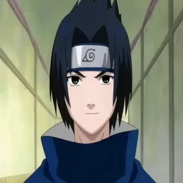

El protagonista con el sueño de convertirse en Hokage.

Sasuke Uchiha
El ninja prodigio que busca vengar a su clan.
Sakura Haruno
Una ninja con habilidades médicas y una fuerza impresionante.
Datos Curiosos
Naruto fue creado por Masashi Kishimoto y publicado en 1999.
El anime tiene más de 700 episodios, incluyendo "Naruto Shippuden".
Naruto es conocido por sus icónicas técnicas como el Rasengan y el Kage Bunshin.
Comparte cumpleaños
En muchas series de manga y anime, los cumpleaños de los personajes no están pensadas al tuntún y suelen tener algún tipo de significado.
El de Naruto es el 10 de octubre, y lo curioso es que lo comparte con otros dos personajes: Menma Uzumaki y Menma Namikaze. Los tres personajes son muy parecidos físicamente y además más o menos son los "Narutos" de sus respectivos universos en historias alternativas, así que tienen sentido que compartan cumpleaños